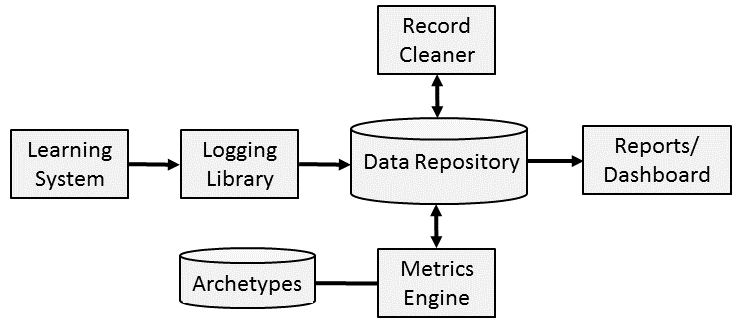
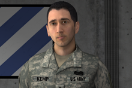
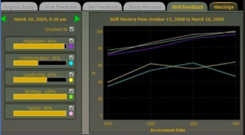
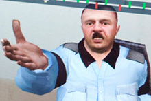

Mark's ICT Projects
Back to Home Page
SMART-E: Generalized Learning Analytics
|
Typically, training systems use custom data formats for logging
learner behavior meaning that common tasks such as data cleaning, and
calculation of basic metrics must be redone to instrument each
system. The SMART-E project is investigating the use of common data
formats based on
the DoD
xAPI standard. Our first test case is Engage (see below), and a
Python-based logging library; a C# logging library is also being
developed. A key area of reseach is interpreting generalized metrics
(e.g., reaction time, correctness) based on archetypes. An archetype
is a category of learner such as "struggling novice" or "disengaged"
which may need additional support/motivation.
|

Click to enlarge.
|
INOTS and ELITE: Branching conversations to support interpersonal skills training
|
Branching conversations consist of decision points. At each
decision point, the virtual role player acts out a set of lines and
the learner is presented with choices for how to
respond. Each of those choices is connected to another decision point
in the conversation until a conversation ending is reached.
The INOTS project
used this framework in a classroom setting at the Navy's Officer
Training Command. Learners can practice dealing with the personal and
performance problems of virtual subordinates before taking command. In
the classroom, one learner "talks" directly to the virtual role player
while the rest of the class votes on the best option using electronic
clickers. The intelligent tutoring system presents this data to the
instructor via an "instructor control panel" (ICP). Performance of the
class and individual learners can be visualized via a variety of
charts and graphs. The ICP also allows the instructor to see the links
between the choices offered and the instructional design (i.e., why a
choice is correct, incorrect or
mixed). ELITE is a
version of the system customized for the Army.
|

|
MILES is a version of the system created for USC's Center for
Innovation and Research on Veterans and Military Families (CIR). In
this case, the virtual human plays the role of a veteran, and
learners practice their motivational interviewing skills.
ELITE Lite and
INOTS
Counseling are versions of ELITE and INOTS respectively that
learners can run on their personal computers. An intelligent tutoring
system provides hints and feedback during the simulated conversation,
and the instructor control panel was replaced with a self-directed
performance review. MIND is a
personal-computer version of MILES customized for use by the Veterans Affairs
(VA) Puget Sound, and the University of Washington, Department of
Psychology.
ELITE Lite is a general platform for training interpersonal skills. In
addition to interactive scenarios with virtual role players, the
platform can deliver videos demonstrating good and bad approaches to
addressing issues, and an instructional video with multiple choice
questions designed to teach the target
skills. STAT is an
example of using this platform for a different domain. In this case,
users play the role of a school administer or psychologist conducting
threat assessment interviews with a virtual student. ELITE Lite is
also being used for Sexual Harassment/Assault Response &
Prevention (SHARP) training in the context
of ELITE
SHARP CTT
and ELITE
SHARP POST.
Engage: Empiricial research into promoting learner engagement in virtual learning environments
We know that generally, learner emotions can have short-term impacts
(e.g., bored students seeking to speed through an exercise) as well as
long-term impacts (e.g., general dislike for a subject). The Engage
project uses the ELITE-Lite training system to explore the following
topics in support of general guidelines for promoting learner
engagement:
- How learner traits impact their performance, and interact with changes to the tutoring system (e.g., increased help given).
- Learner moment-to-moment facial expressions as they interact with the system.
- Learner self-assessments of the learning experience after the fact.
Sit Ped: Empiricial research into authoring
One Page Overview PDF
|
Adding intelligent tutoring system (ITS) support to a training
scenario often involves an abstract view of the data (e.g., text or a
tree). The Situated Pedagogical Authoring project (Sit Ped)
investigates the impact of authoring an ITS in the same environment as
the learner (i.e., with a talking, gesturing virtual human). The Sit
Ped authoring tool allows authors to work with branching conversations
such as those in the ELITE project.
|

|
SPS: Easy-to-author virtual patients
See also: USC Standard Patient and SimCoach.
|
The SimCoach Standard Patient Studio (SPS) extends the authoring and
playback capabilities of the SimCoach system to allow virtual patients
to be easily created by doctors and other subject matter
experts. SimCoach facilitates an interview where learners interact via
free text input with the patient (i.e., typing whatever they
like). This interview can be part of a simulated clinic visit where
learners order tests and perform physical exam
procedures. Learners receive feedback after completing the case, and
have the ability to repeat the case until mastery is reached.
|
|
TACL: Reflective writing in the context of lifelong learning
One Page Overview PDF
|
Technologies for Accelerated Continuous Learning (TACL)
aims to provide help to learners over long periods of time (i.e.,
lifelong learning support). One difficulty is the wide range of
domains that a typical learner encounters in their school careers,
continuing education and informal education. One tool that scales to
this quantity of knowledge is a reflective writing environment. For a
particular experience (e.g., watching a documentary), we can give
learners a set of reflection questions that support behavior
such as self-explanation. Our software facilitates a peer review
process where learners review the writing of their peers, and
revise their own writing based on peer feedback.
|

|
VIGOR: Tutoring in a virtual world
Virtual worlds have great potential for teaching material involving a
spatial element. This project involved a virtual reconstruction of a
freeway intersection in Iraqi where a friendly fire incident
occurred. A virtual guide leads learners through the environment,
quizzes them, and answers questions. At the end of the experience, a
virtual tutor conducts a review.
BiLAT: bilateral negotiation and cultural awareness training
|
BiLAT allows learners to participate in simulated conversations
with virtual Iraqis to practice negotiating in the context of common
Iraqi cultural considerations. The intelligent tutoring system provides
hints and feedback during the simulated conversation, and runs a
tutor-directed performance review after the conversation.
|

|
We have used BiLAT as a research test bed to investigate issues such as
- the impact of interactivity and feedback (i.e., comparing standard BiLAT to a video of an expert playing BiLAT and BiLAT with no feedback).
- the impact of the interface (e.g., sound, animation, 3D graphics).
- the impact of hint/feedback specificity (e.g., conceptual help versus telling you what to do).
IMPACT: Experience manipulation
A collaboration with Soar Technology
In training systems such as BiLAT, scenarios tell a story as well as
provide learners an opportunity to practice skills. Specifically in
BiLAT, characters have a range of responses to learner actions and
choose among them using variables such as trust. In this project, we
expanded this range of responses to include indirect feedback (i.e.,
feedback delivered by the character rather than explicitly coming from
a tutor). We also changed the architecture of the system so that the
intelligent tutoring system (ITS) rather than the character made the
final decision about how to respond to the learner. Thus, the ITS
could challenge the learner by providing negative responses, support
novices by providing positive responses, and in both cases provide
indirect feedback.
CAB: Culturally affected behaviors
Often the culture of a virtual human is only represented in the mind
of the author as they write lines for the virtual human to speak or
behaviors for the virtual human to perform. In this project, we
represented culture explicitly and developed two demonstration
characters for the BiLAT training system. We started with a character
from the system whose utterances and behaviors mixed his culture
(Iraqi) with his role (policeman). This character was reimplemented
with explicit representations of culture and task. We could then
transform this character into a German policeman by changing the
culture model.
RTXAI: Reflective tutoring and explainable artificial intelligence
Explainable artificial intelligence (XAI) is the capability for
artificial agents to explain their decision making to human users. It
debuted at ICT in the serious games, Full Spectrum Warrior and Full
Spectrum Command. We then developed a more general database-driven
explanation system that could import data from tactical simulations
such as the OneSAF Objective System.
In the Reflective Tutoring and XAI (RTXAI) project, we changed focus
to simulation of conversation. Specifically, we looked at bilateral
negotiation and the negotiation agent developed in the SASO-ST
project. We extended this agent so it could
explain its behavior after the negotiation, and developed a prototype
intelligent tutoring system that helped users review their simulated
negotiation.
{kind=link}